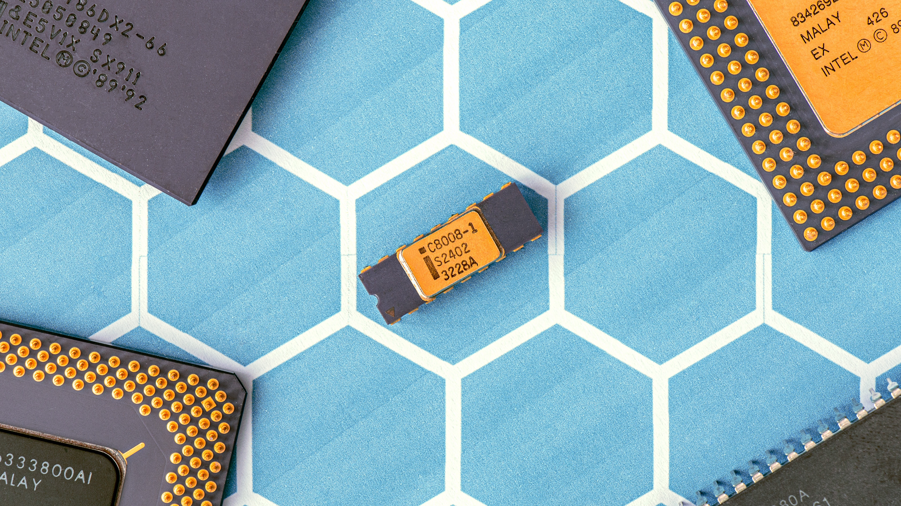

Dynamic random-access memory (DRAM) is a type of random access semiconductor memory that stores each bit of data in a memory cell consisting of a tiny capacitor and a transistor, both typically based on metal-oxide-semiconductor (MOS) technology. The capacitor can either be charged or discharged; these two states are taken to represent the two values of a bit, conventionally called 0 and 1. The electric charge on the capacitors slowly leaks off, so without intervention the data on the chip would soon be lost. To prevent this, DRAM requires an external memory refresh circuit which periodically rewrites the data in the capacitors, restoring them to their original charge. This refresh process is the defining characteristic of dynamic random-access memory, in contrast to static random-access memory (SRAM) which does not require data to be refreshed. Unlike flash memory, DRAM is volatile memory (vs. non-volatile memory), since it loses its data quickly when power is removed. However, DRAM does exhibit limited data remanence.
DRAM typically takes the form of an integrated circuit chip, which can consist of dozens to billions of DRAM memory cells. DRAM chips are widely used in digital electronics where low-cost and high-capacity computer memory is required. One of the largest applications for DRAM is the main memory (colloquially called the "RAM") in modern computers and graphics cards (where the "main memory" is called the graphics memory). It is also used in many portable devices and video game consoles. In contrast, SRAM, which is faster and more expensive than DRAM, is typically used where speed is of greater concern than cost and size, such as the cache memories in processors.
Due to its need of a system to perform refreshing, DRAM has more complicated circuitry and timing requirements than SRAM, but it is much more widely used. The advantage of DRAM is the structural simplicity of its memory cells: only one transistor and a capacitor are required per bit, compared to four or six transistors in SRAM. This allows DRAM to reach very high densities, making DRAM much cheaper per bit. The transistors and capacitors used are extremely small; billions can fit on a single memory chip. Due to the dynamic nature of its memory cells, DRAM consumes relatively large amounts of power, with different ways for managing the power consumption.
DRAM had a 47% increase in the price-per-bit in 2017, the largest jump in 30 years since the 45% percent jump in 1988, while in recent years the price has been going down.